Intro
In June of 2018 our team built a custom platform that made our client the 1st hyper-targeted, fully automated Google and Facebook ads provider for property management companies in the US.
Work Covered & Teams
MARCH 2019 - JULY 2019 - 8 SPRINTS
This project example covers one of the features from the 2nd major release in 2019: Google search ads.
Our team: Business Analyst, QA, Designer, Sr. Engineer, 2x Jr. Engineers, Sr. Architect.
Client team: Product Manager, Sr. Director of Performance Marketing, Digital Marketing Manager, 3x Digital Marketing Analysts.
Client Background
Enterprise advertising real estate company with over 40 years of being in business.
Challenges
With less time to deliver, we need to make the design process more accessible to our team and the client’s team. Also, another internal team is already working on the same feature for a different client that we will be building.
Goals
Reduce the number of errors from failed search ads significantly.
Framing The Problem
MARCH 18TH - 22ND, 2019
18
Meet with client to discuss feature requirements.
Internal discussion on possible solutions.
19
Research design patterns.
Create initial sketches and concepts.
20
Review sketch with internal team members to validate concept early on.
Update sketch based on feedback from internal team.
21
Create variations on the sketch to have options for the client.
Create quick prototype with pend and paper to validate workflow.
22
Review sketch with client and make updates based on client feedback.
Debrief
Our business analyst and I met with the marketing manager and his team during the 1st week of the sprint to go over the following: What do they want to achieve with this feature? How do they define the problem we need to solve? How does this feature impact the broader operations of the business?
Problem
We needed to create a way for our client’s team to visualize and manage the search ads in a simple and intuitive way.
Users can define placeholders that reference information from a database. These references can be inserted in any fillable form of the platform. This is part of the form used to create their search ads:
These fields become the simplified URL in the Google search results (Google has since replaced the URL in search ads with keywords to simplify the results).
The problem is path 1 and 2 have a limit of 15 characters, and the values in the database that replace “[Bedroom#]” and “[City]” often exceed the character limit, causing the ads to fail when posting.
Insights
We learned that the client fixes the failed ads by shortening all of the copy, then they try again. This reduces the quality of the ad in many cases, but guarantees that it does not fail.
Initial Concept
Our client explained in our 1st meeting that “We really need a bunch of versions of the same ad”. I wanted to capture the client’s concept of “multiple ad versions”, so at the end of the 1st week we incorporated the idea into the initial sketch I had done. They liked the general direction, so from there we started asking more targeted questions: What are the limits of the form? How many versions do they need to make?

The BA and I spent the rest of the last day reviewing the other design team’s solution for the same feature. Our solution was much different and the other team was ready to start coding theirs.
Research
MARCH 25TH - 28TH, 2019
25
Analysis of similar design patterns including screenshots, annotations, and links to articles.
26
Outlined key findings.
Read through discussions on selected design patterns.
27
Met with developers to review design patterns, initial concepts, and sketches.
28
Met with the client to share how our research can inform the concept.
29
Began making updates to our sketches.
During the 2nd week I did an analysis of several design patterns I felt had good potential for the ad versions. These materials included articles from Nielsen Norman, UX Stack Exchange, and Codepen. I also considered any physiological limitations the client has. We knew that the client team had no preference for keyboard or mouse when working in the platform.
I shared the work from the previous week with our lead developer to let him provide feedback early in the process and familiarize with the concept. I took notes and recorded the feedback. At the time I used Optimal Workshop’s Framer feature to capture feedback.
The BA and I discussed the changes that we wanted to make to our sketches based on feedback from our developers and the research I had done. We shared these updates with our client through email and started transferring ideas to a prototype.
Hypotheses
Managing all versions of the search ads is possible with a single form template that can scale to have as many versions of each line in the ad as the client needs.
Design & Testing
APRIL 1ST - 5TH, 2019
After validating our initial concept with members of our internal team and the client’s team, we moved on to creating a prototype to capture the workflow in more detail.
Our BA informed me that Google will add 2 additional fields to the ad form and our client wants them to be included in the new design. I created a mock-up with the 2 additional fields and added the number of versions the client expected to use for each field of the form. This gave us an idea of how the form scaled in size. I suggested we pivot to using a model for the form after adding the additional lines. The form was getting too large to show in-inline with the other form fields of the page it would live on. We suggested we provide a space to focus, and allow the form to stay manageable as it scaled in size.
Prototyping
I used the prototype to test with some of our team members who are familiar with our digital marketing products. I decided to build the prototype in Figma instead of Sketch. Doing this allowed me to invite team members to the file to leave comments and ask questions. The developers on our team reported feeling more included in the design process and as the interactions of the design evolved over time.
I asked each person to complete a specific task and verbalize their thought process. I observed them going through the prototype and recorded what I heard and saw during each session. I used Optimal Workshop to record feedback for testing sessions, specifically the Reframer tool testing too. With Reframer we can reference feedback and insights from testing and share it with my team members. I made updates to the design after analyzing the feedback.
We also had to address that our team’s design for this feature was very different than another team’s design. They were confident about their solution and a company executive had backed their approach.
We had already validated our direction with our client, and with internal team members; something the other team had not done.
Our BA suggested we ask another one of our clients in the martech industry to weigh in on each teams’ version of the design. The client was given some context and asked which one made more sense. The executive from our company was shocked to hear the client respond with confusion to their team’s design, while our version “just made sense”.

This is the final result after several testing sessions, 6 prototype iterations , and synthesis of information collected. A great insight from one tester resulted in the additional ability to show and hide the versions: “I just want to be able to see my ad.” — TangoCode Executive